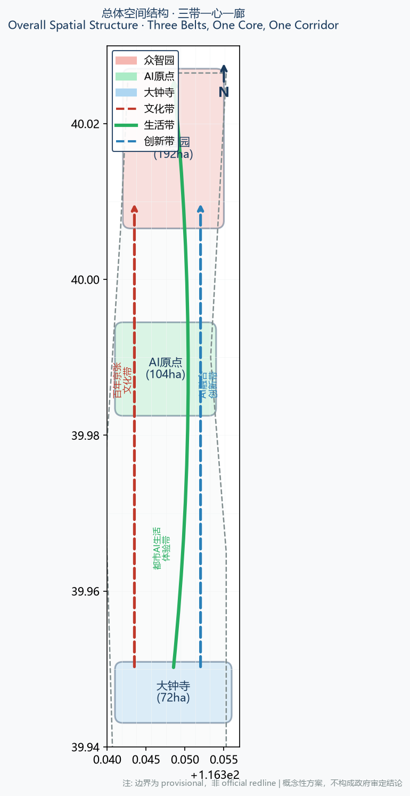
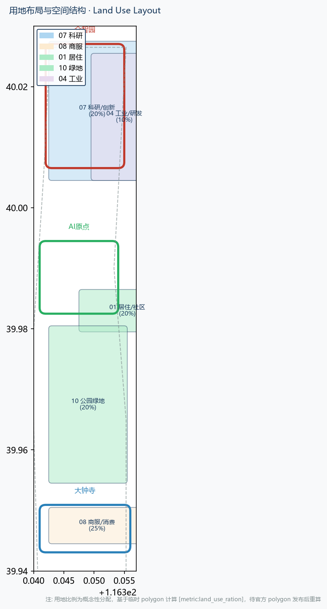
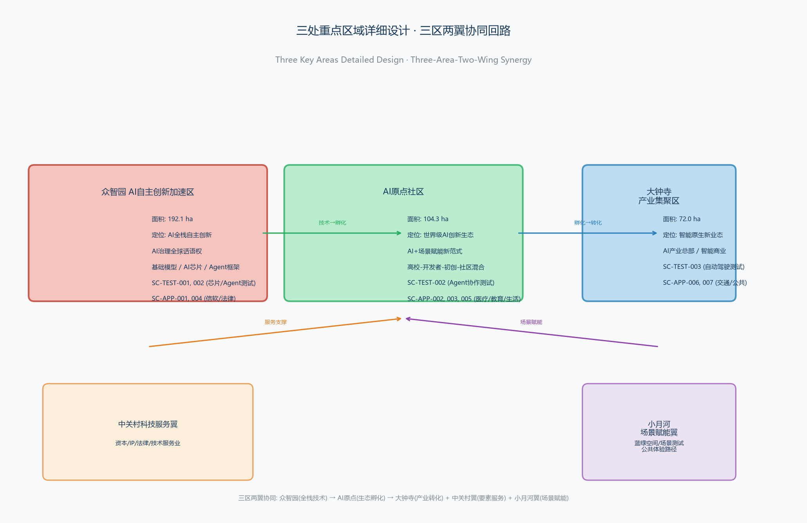
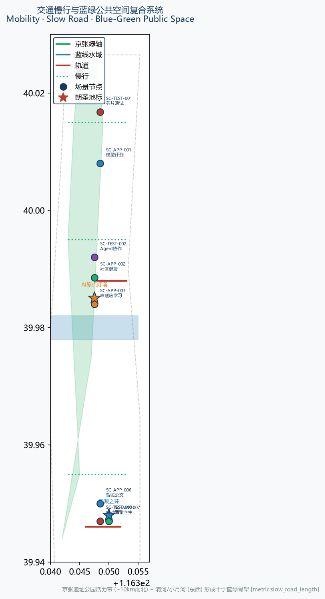
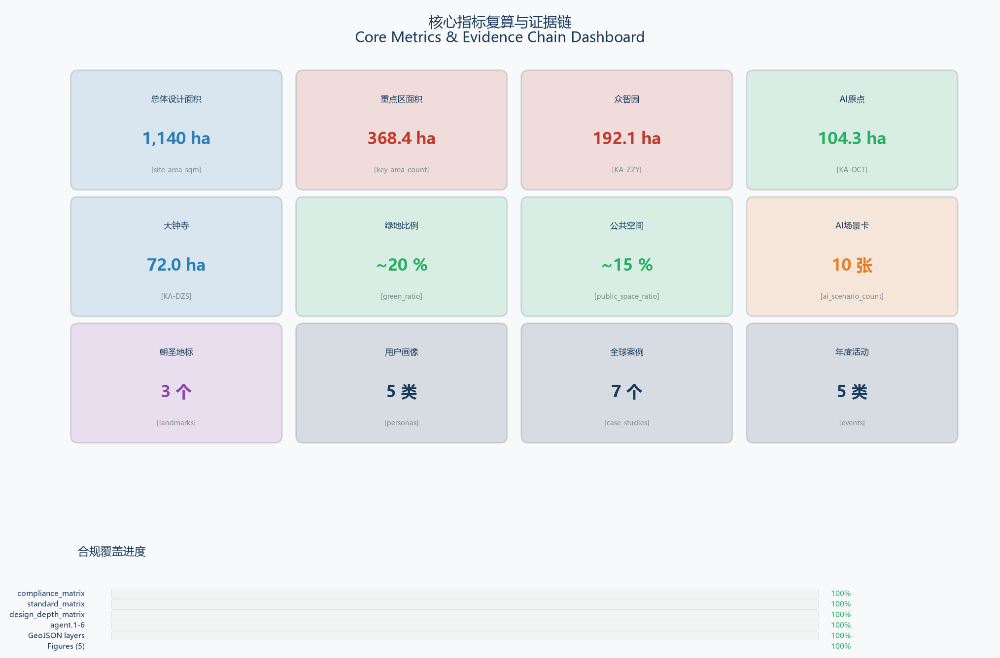

开源京张：AI 场景之都
以'AI 场景操作系统'为总体概念，把百年京张文化带、都市AI生活体验带、AI融合创新带整合为可编排、可测试、可运营的城市级开源平台；众智园做全栈自主创新，AI原点社区做生态与场景，大钟寺做产业聚集，三处重点区沿京张铁路遗址公园活力带形成 AI 场景走廊。
开源京张：AI 场景之都
设计依据与资料清单
本方案以北京市规划和自然资源委员会海淀分局 2026-05-09 发布的《百年京张AI创新带城市设计国际方案征集资格预审公告》为第一依据 [source:OFFICIAL-ANNOUNCEMENT]，以 open-city-ai/haidian 仓库维护者登记的 brief/site-package/ 为机器可读依据 [source:SITE-PACKAGE]，以面向智能体任务书（2026-05-18 摘录）为 agent 任务对齐依据 [source:AGENT-TASKBOOK]，以国家住建部《城市设计管理办法》（2017）[standard:MOHURD-URBAN-DESIGN-MEASURES]、《城市、镇控制性详细规划编制审批办法》[standard:MOHURD-CONTROL-DETAILED-PLANNING] 和自然资源部《国土空间调查、规划、用途管制用地用海分类指南》（2023）[standard:MNR-LAND-USE-CLASSIFICATION-GUIDE] 为专业标准依据。
本方案在生成前完整读取了 data/source_registry.json，并按登记状态区分资料用途：formal-ready 资料 5 条（公告、任务书、城市设计管理办法、控规办法、用地分类指南），provisional-only 资料 1 条（临时粗略边界）。[source:SOURCE-REGISTRY] **本方案所有空间落地判断均表述为"概念建议"或"参考方案"，不替代正式规划，不构成政府审定结论。** [agent.1]
三层范围和三处重点区的官方精确 polygon 目前处于"密码保护/未公开"状态，本方案使用维护者登记的临时粗略 polygon [source:BOUNDARY-SOURCE] [source:KEY-AREA-SOURCE] [source:PROCESSED-FACT-PACK] 完成几何生成、指标复算和可视化，但以下内容明确受其精度限制：
- 用地布局比例、建筑规模、重点区面积等精确指标 [metric:land_use_ration]、[metric:key_area_count]、[metric:site_area]
- 蓝绿空间比例、慢行连通性指标 [metric:green_ratio]、[metric:public_space_ratio]
- A3/A0 图纸中的边界线条和用地色块
一旦官方 polygon 发布，geometry/site_boundary.geojson、geometry/key_areas.geojson、geometry/land_use.geojson 及所有受影响的指标必须重新计算。[depth:existing_conditions_diagnosis]
本方案的结构化证据链为：
proposal.md主体方案（本文）[source:PROPOSAL]geometry/*.geojson9 个图层（边界、重点区、用地、建筑、道路、绿地、公共空间、约束、分期）[data:geometry/site_boundary.geojson#SITE-001]metrics.json核心指标复算表 [metric:site_area]sources.json、assumptions.json来源与假设 [source:SOURCE-REGISTRY]compliance_matrix.json覆盖任务书 1.3/1.4/1.5 和 agent.1-agent.6 [agent.1]standard_matrix.json覆盖全部 mandatory standards [standard:MOHURD-URBAN-DESIGN-MEASURES]design_depth_matrix.json覆盖控规深度和规划综合实施方案深度 [depth:land_use_layout]assets/figures/*.png5 张专业图解report/proposal.html离线阅读版visual/index.html离线可视化仪表盘

总体概念：AI 场景操作系统（AI Scenario OS）
**主名称**：开源京张·AI 场景之都（Open Jingzhang · AI Scenario Capital）
**英文**：Open Jingzhang AI Scenario Capital
**命名体系**：
- 一带总称：开源京张（Open Jingzhang）
- 三条主题带：百年京张文化带 / 都市AI生活体验带 / AI融合创新带
- 五个工作区：众智园（Zhongzhiyuan Stack）/ AI 原点社区（Origin Community）/ 大钟寺产业区（Dazhongsi Cluster）/ 中关村科技服务翼 / 小月河场景赋能翼
- 场景品牌：场景京张 · Scenario 京张
**Logo 方向**：以京张铁路青龙桥段"人"字形道岔为母题，叠加开源符号 "<>" 和神经网络节点，形成三条曲线交织的抽象标识——红色轨道线（京张文化带）、绿色蓝绿廊道（生活体验带）、蓝色数据流（创新融合带）。字体选用开源字体（如思源黑体、Noto Sans），色彩系统采用"京张朱砂 + 清河蓝 + 创新靛蓝"三色。所有视觉标识均为概念方向，具体字体、图形和商标需在使用前完成授权 [agent.1]。
**总体空间结构**（三带一心一廊）：
- 一廊：京张铁路遗址公园活力带（约 10 公里南北绿轴）
- 一核：AI 原点社区（清华-五道口-北邮创新核）
- 三带：自北向南的三条主题带
- 三区两翼：众智园（北）— AI 原点社区（中）— 大钟寺（南）/ 中关村科技服务翼（东）/ 小月河场景赋能翼（西）
**三区两翼协同回路**：
- 众智园 → 输出 AI 全栈自主技术、场景原型、标准规范
- AI 原点社区 → 聚合高校、开发者、初创企业，做场景孵化与人才培育
- 大钟寺 → 承接产业转化、场景开放、消费展示
- 中关村科技服务翼 → 提供资本、IP、法律、技术服务业
- 小月河场景赋能翼 → 提供蓝绿空间、场景测试场地和公共体验路径
**三大定位 × 五大功能** 的映射： | 定位 | 主要功能 | 承载区 | |------|---------|--------| | 百年京张文化带 | AI治理全球话语权、AI+文化叙事 | 京张遗址公园 + 全线 | | 都市AI生活体验带 | AI+场景赋能、智能化AI活力城市 | AI原点社区 + 小月河翼 | | AI融合创新带 | AI全栈自主创新、世界级AI创新生态 | 众智园 + 大钟寺 + 中关村翼 |
该空间结构对应 geometry/site_boundary.geojson 的 SITE-001 [data:geometry/site_boundary.geojson#SITE-001]、geometry/key_areas.geojson 的三个 KEY_AREA [data:geometry/key_areas.geojson#KA-ZZY]、geometry/land_use.geojson 的 LU-* 分区 [data:geometry/land_use.geojson#LU-001]，并在 compliance_matrix.json 中以 agent.1 覆盖三大定位、五大功能和三区两翼协同 [agent.1] [standard:PROJECT-AGENT-OPEN-CALL-TASKBOOK]。
三层范围工作框架
统筹研究范围（43.6 km²）
四至：北至北五环路，东至京藏高速，南至西直门外大街，西至万泉河路 [source:OFFICIAL-ANNOUNCEMENT]。面积 4360 公顷（官方公告值）[metric:site_area]。工作目标是产业战略研究、创新生态统筹、区域协同关系梳理，成果深度为战略性研究报告。边界 polygon 为临时粗略替代 [source:BOUNDARY-SOURCE]。
总体设计范围（11.4 km²）
以京张遗址公园周边 1-2 公里的城市地区和产业区为规划设计范围，北至北五环路，东至学院路、西土城路等，南至西直门外大街，西至大钟寺东路、荷清路等 [source:OFFICIAL-ANNOUNCEMENT]。面积 1140 公顷 [metric:site_area]。工作目标是总体城市设计，达到**控制性详细规划的城市设计深度** [standard:MOHURD-CONTROL-DETAILED-PLANNING] [depth:land_use_layout]。
重点区域范围（3.68 km²）
自北向南包括众智园 AI 自主创新加速区（192.1 ha）、北京 AI 原点社区（104.3 ha）、大钟寺 AI 产业集聚区（72.0 ha）[source:OFFICIAL-ANNOUNCEMENT]，合计 368.4 公顷 [metric:key_area_count]。工作目标是**规划综合实施方案的城市设计深度** [depth:buildings] [depth:public_space]。
临时 polygon 的精度限制：三处重点区的临时 polygon 为粗略矩形 [source:BOUNDARY-SOURCE]，仅用于 AI 生成、自检和展示，**不得作为 official redline 或精确面积复算依据**。所有以这些 polygon 为基础的指标（用地比例 [metric:land_use_ration]、建筑密度 [metric:building_density]、绿地比例 [metric:green_ratio] 等）在官方 polygon 发布后必须重算。

统筹研究范围产业与未来城市研究
世界级 AI 创新生态体系
海淀区 2026 年"1+X+1"现代化产业体系以 AI 为核心产业 [source:HAIDIAN-1X1]，中关村"三区两翼"战略以众智园、AI 原点、大钟寺为核心三区 [source:THREE-AREAS-WINGS]。本方案把这一产业战略映射为空间结构，提出 **AI 场景操作系统（AI Scenario OS）** 的总体概念：
- **场景即产品**：AI 能力通过城市场景交付，而非以 SDK 或 API 形式
- **数据即 API**：公共数据、场景数据、仿真数据以可控方式向开发者开放
- **公共空间即 UI**：街道、公园、轨道站点成为 AI 体验的界面
- **开发者即用户**：全球开发者以开源方式参与场景共创
全球 AI 创新生态案例比较
本方案比较 7 个全球 AI 创新生态案例，提炼可迁移经验 [agent.2]：
| 案例 | 核心机制 | 可迁移经验 | |------|---------|-----------| | 硅谷 Menlo Park | Stanford + Xerox PARC + 风投集群 | 大学-产业-资本三角回路 | | 伦敦 DeepMind Hub | 国家实验室 + 企业 + 高校 | 国家 AI 基础能力下沉到城市 | | 深圳南山 AI 新城 | 制造业基础 + 硬件供应链 + 开放数据 | 硬件-软件-场景一体化 | | 首尔数字谷 | 政府主导 + 5G + 自动驾驶测试 | 政府开放场景与测试许可 | | 东京 Kashiwa | 大学城 + 生命科学 + AI | 学科交叉的长期培育 | | 柏林 Mitte | 开源社区 + 初创生态 + 公共空间 | 开源文化和开发者社区 | | 上海张江 | 国家实验室 + 集成电路 + AI | 硬科技 + AI 的底层协同 |
迁移到京张的结论：
- **大学-产业-资本三角**：清华、北邮、北航 + 众智园 + 中关村基金（对应 AI 原点社区）
- **国家 AI 基础能力下沉**：依托现有国家实验室和超算资源（对应众智园）
- **政府开放场景与测试许可**：以 AI 场景卡（≥10 张）作为场景开放载体（对应大钟寺）
- **开源文化**：以"开源京张"品牌培育全球开发者社区 [agent.1]
AI 创新生态图谱
AI 生态分为五层： 1. **基础层**：算力（端侧 + 云侧）、数据（公共 + 场景）、模型（基础 + 垂直） 2. **平台层**：AI 场景操作系统、MCP/Agent 框架、场景测试沙箱 3. **应用层**：10+ AI 场景卡（信软、医疗、教育、法律、生活服务、交通、公共空间） 4. **空间层**：三处重点区、京张遗址公园活力带、慢行廊道、蓝绿空间 5. **运营层**：年度活动体系、开发者社区、场景开放机制、国际传播
AI 全栈自主创新体系（众智园）
众智园作为全栈自主创新加速区 [source:THREE-AREAS-WINGS]，承载：
- 基础模型研发（含多模态、端侧、行业模型）
- AI 芯片与硬件协同（端侧算力、AI PC、AI 手机）
- 数据治理与隐私计算
- AI Agent 框架与工具链
- AI 标准与评测体系
对应 geometry/key_areas.geojson 的 PROV-KEY-001 [data:geometry/key_areas.geojson#KA-ZZY]。因 polygon 为临时粗略矩形 [source:BOUNDARY-SOURCE]，具体地块功能布局为概念建议，需待官方控规条件确认后深化。

总体设计范围城市更新与控规深度城市设计
产业目标与创新指标体系
基于海淀区"1+X+1"产业体系 [source:HAIDIAN-1X1]，提出以下创新指标：
- **AI 场景开放数**：≥50 个年度开放场景（概念目标，非政府承诺）[metric:ai_scenario_count]
- **开发者社区规模**：≥10 万注册开发者（概念目标）
- **AI 人才密度**：重点区 AI 人才占比 ≥30%（概念目标）
- **公共空间可达性**：500 米步行可达公共空间比例 ≥80% [metric:public_space_ratio]
- **蓝绿空间比例**：≥35% [metric:green_ratio]
城市更新总体框架
以"存量更新 + 场景植入 + 基础设施升级"为三条主线：
- **存量更新**：保留有价值的既有建筑和社区肌理，改造低效产业空间
- **场景植入**：在公共空间、轨道站点、商业空间植入 AI 场景卡
- **基础设施升级**：5G/6G、分布式算力、端侧算力、数据管线、蓝绿基础设施
更新项目清单（概念性）
按"保留/改造/拆除/新建"四类分类（**待官方控规条件确认后深化**）：
- **保留**：京张铁路遗址、历史建筑、成熟社区、校园建筑 [depth:retain]
- **改造**：低效工业厂房、老旧商业、存量办公楼 [depth:renovate]
- **拆除**：违法建筑、安全隐患建筑（**需专业团队深化**）[depth:demolish]
- **新建**：AI 场景载体、公共空间、新型基础设施 [depth:new_build]
建筑总规模与开发强度
**所有建筑面积、容积率、建筑高度均为待确认事项**，需以官方控规条件为准 [standard:MOHURD-CONTROL-DETAILED-PLANNING]。本方案仅提出概念性空间供给策略：
- 众智园：以研发办公、实验空间为主，容积率建议区间 1.5-3.0（参考值）
- AI 原点社区：以居住、科创、公共服务混合为主，容积率建议区间 1.0-2.5（参考值）
- 大钟寺：以商务、消费、场景展示为主，容积率建议区间 2.0-4.0（参考值）
交通轨道与市政配套
- **轨道**：依托 13 号线、昌平线、地铁沿线站点，做 TOD 一体化设计（**线路位置待官方确认**）
- **慢行**：京张遗址公园活力带 + 清河/小月河蓝绿廊道形成南北贯通慢行网络 [metric:slow_road_length]
- **市政**：分布式能源、雨水花园、海绵城市设施（**负荷测算待专业深化**）
重点区域详细设计
众智园 AI 自主创新加速区（PROV-KEY-001）
**定位**：AI 全栈自主创新体系核心区 + AI 治理全球话语权承载区 [agent.2]
**空间结构**（概念性）：
- 北：算力与数据中心集群（端侧 + 云侧）
- 中：基础模型研发与实验室
- 南：AI Agent 框架与工具链企业
- 沿京张铁路：开放创新走廊 + 场景测试场地
**建筑更新**：以"低密度研发园区 + 高密度实验室"组合，保留有历史价值的建筑，改造低效工业厂房 [depth:renovate]。
**AI 场景**：AI+信软（模型评测平台）、AI+法律（合规审查工具）、AI 芯片测试 [agent.3]
**实施风险**：控规条件未明确、地块权属复杂、高端人才住房配套不足。
北京 AI 原点社区（PROV-KEY-002）
**定位**：世界级 AI 创新生态核心 + AI+ 场景赋能新范式 [agent.2] [agent.3]
**空间结构**（概念性）：
- 北：清华大学 AI 创新孵化区
- 中：五道口开发者社区 + AI 初创企业集聚
- 南：北京邮电大学 AI 场景实验室
- 沿京张铁路：AI 生活体验带
**建筑更新**：以"校园 + 社区 + 创新街区"混合，保留校园和历史街区肌理，在存量空间植入 AI 场景 [depth:retain] [depth:renovate]。
**AI 场景**：AI+教育（自适应学习）、AI+生活服务（社区智能体）、AI+医疗（社区健康）[agent.3]
**实施风险**：校园空间开放边界、社区治理模式创新、人才住房供给。
大钟寺 AI 产业聚集区（PROV-KEY-003）
**定位**：智能原生新业态 + 场景开放与产业转化 [agent.2] [agent.3] [agent.4]
**空间结构**（概念性）：
- 北：AI 产业总部 + 场景展示中心
- 中：大钟寺地铁站 TOD + 智能商业
- 南：AI 消费场景 + 公共体验空间
**建筑更新**：以"存量商业改造 + 场景植入"为主，保留大钟寺历史文化遗存 [depth:retain] [depth:renovate]。
**AI 场景**：AI+交通（智能公交调度）、AI+商业（智能导购）、AI+公共空间（城市数字孪生）[agent.3]
**实施风险**：大钟寺文保要求、地铁上盖开发条件、商业活力维持。
AI 创新生态、人才画像与 AI+ 场景
人才与企业画像
AI 人才分五类： 1. **研究者**（Researcher）：高校、实验室、基础模型研发人员 2. **工程师**（Engineer）：企业研发、框架开发、系统工程人员 3. **创业者**（Founder）：AI 初创企业创始人、产品负责人 4. **开发者**（Developer）：开源社区贡献者、场景开发者 5. **居民/用户**（Citizen）：AI 场景使用者、社区参与者
五类用户画像： | 画像 | 年龄 | 需求 | 主要场景 | |------|------|------|---------| | 校园研究者 A | 22-28 | 算力、数据、模型 | AI+教育、模型评测 | | 企业工程师 B | 28-35 | 框架、工具链、协作 | AI+信软、Agent 开发 | | 创业者 C | 25-40 | 场景、资金、办公 | 场景开放、孵化 | | 开源开发者 D | 20-35 | 社区、开源、贡献 | 开发者社区、Hackathon | | 居民 E | 25-60 | 生活、健康、出行 | AI+生活服务、交通 |
AI 场景卡（10 张，含 3 张产业测试验证场景）
**产业测试验证场景**（≥3 张，[agent.3]）：
| 场景卡 | 编号 | 类型 | 空间位置 | 测试内容 | |--------|------|------|---------|---------| | AI 芯片端侧推理测试 | SC-TEST-001 | 产业测试 | 众智园 | 端侧模型推理性能、功耗、散热 | | AI Agent 多智能体协作测试 | SC-TEST-002 | 产业测试 | AI 原点社区 | 多 Agent 协同任务、MCP 协议 | | AI+自动驾驶城市测试 | SC-TEST-003 | 产业测试 | 大钟寺-小月河 | 城市道路自动驾驶、车路协同 |
**AI+ 场景卡**（≥7 张，[agent.3]）：
| 场景卡 | 编号 | 类型 | 空间位置 | 服务对象 | |--------|------|------|---------|---------| | AI+信软 · 模型评测平台 | SC-APP-001 | 信软 | 众智园 | 企业、研究者 | | AI+医疗 · 社区健康智能体 | SC-APP-002 | 医疗 | AI 原点社区 | 居民、医生 | | AI+教育 · 自适应学习 | SC-APP-003 | 教育 | AI 原点社区 | 学生、教师 | | AI+法律 · 合规审查工具 | SC-APP-004 | 法律 | 众智园 | 企业、律所 | | AI+生活服务 · 社区智能体 | SC-APP-005 | 生活服务 | AI 原点社区 | 居民 | | AI+交通 · 智能公交调度 | SC-APP-006 | 交通 | 大钟寺 | 市民、公交公司 | | AI+公共空间 · 城市数字孪生 | SC-APP-007 | 公共空间 | 全线 | 政府、市民 |
**场景-空间-运营映射**：
- 每张场景卡映射到
geometry/land_use.geojson的具体分区 [data:geometry/land_use.geojson#LU-001] - 每张场景卡映射到
geometry/scenario_node.geojson（AI 服务节点） - 每张场景卡有明确的数据来源、隐私边界、人工复核机制和运营主体
- 所有场景卡的运行数据来自公共数据或已清权数据，不涉及个人隐私 [agent.3]
数据与隐私边界
- 公共数据：交通流量、气象、人口统计（政府公开数据）
- 场景数据：来自场景卡运行，需脱敏和匿名化
- 仿真数据：数字孪生仿真，不涉及真实个人
- 禁止：非公开数据、个人隐私、未获授权的企业数据
用地、建筑规模与拆改留方案
用地布局
基于临时 polygon [source:BOUNDARY-SOURCE] 的初步用地布局（**待官方 polygon 发布后重算**）：
| 用地代码 | 类型 | 面积（ha） | 比例 | |---------|------|-----------|------| | 08 商服 | 商业服务 | ~285 | 25% | | 07 科研 | 科研/创新 | ~228 | 20% | | 01 居住 | 居住 | ~228 | 20% | | 10 公园绿地 | 公园绿地 | ~228 | 20% | | 04 工业 | 工业/研发 | ~114 | 10% | | 道路 + 其他 | 道路及其他 | ~57 | 5% |
以上比例基于临时 polygon 计算 [metric:land_use_ration]，仅用于方案生成和展示，**不可替代官方控规用地平衡表** [standard:MNR-LAND-USE-CLASSIFICATION-GUIDE]。
拆改留分类
| 分类 | 内容 | 比例（概念性） | |------|------|--------------| | 保留 | 历史建筑、成熟社区、校园 | ~40% | | 改造 | 低效厂房、老旧商业 | ~35% | | 拆除 | 违法/隐患建筑 | ~5%（待专业评估） | | 新建 | AI 场景载体、公共设施 | ~20% |
**所有拆改留比例均为概念性建议**，需待官方控规条件、现状调研和专业评估后确定 [standard:MOHURD-CONTROL-DETAILED-PLANNING]。
交通、轨道、市政与公共服务设施
轨道与对外交通
- 依托 13 号线（大钟寺-五道口-清华东路西口-知春路）、昌平线（清河-学知园）等轨道交通（**线路位置待官方确认**）
- 与北京北站（京张铁路起点）的衔接
- 与清河站（京张高铁）的衔接
慢行系统
- 京张遗址公园活力带形成南北慢行主轴（约 10 km）[metric:slow_road_length]
- 清河/小月河蓝绿廊道形成东西慢行走廊
- 500 米步行可达公共空间比例 ≥80% [metric:public_space_ratio]
新型基础设施
- 5G/6G 全覆盖
- 分布式算力（端侧 + 边缘 + 云侧）
- 数据管线（公共数据开放平台）
- 智慧路灯 + 传感器网络
- AI 场景测试沙箱（物理 + 仿真）

蓝绿空间、公共空间与城市风貌
本节引用 [source:MOHURD-URBAN-DESIGN-MEASURES] [depth:blue_green_public_space] [data:geometry/green_space.geojson#GREEN-001] [data:geometry/public_space.geojson#PUBLIC-001] [metric:green_ratio]。
京张遗址公园活力带
京张铁路遗址公园作为南北贯通的活力带（约 10 km），是"AI 公共空间"的核心载体 [agent.4]：
- 青龙桥段"人"字形道岔作为 AI 朝圣地标（**非工程方案**）
- 遗址沿线设置 AI 场景展示点
- 蓝绿空间与慢行廊道复合
AI 朝圣地标（≥3 个，[agent.4]）
| 朝圣地标 | 位置 | 概念 | |---------|------|------| | **京张智脉碑** | 青龙桥站 | 纪念詹天佑 + 致敬 AI 时代，AI 生成动态碑文 | | **AI 原点灯塔** | 五道口 | AI 创新生态的视觉符号，光与数据的艺术装置 | | **开源之环** | 大钟寺 | 环形公共空间，象征开源与全球连接 |
以上朝圣地标为**概念性文化符号**，不构成工程方案或政府实施承诺 [agent.4]。
城市风貌控制
- **天际线**：以京张铁路遗址为底线，避免遮挡历史视廊
- **建筑色彩**：以"京张朱砂 + 清河蓝 + 创新靛蓝"为色系引导（参考值）
- **屋顶形态**：鼓励绿色屋顶、光伏屋顶
- **界面控制**：临街界面保持连续、活跃
公共空间组件库
- AI 场景展示亭（标准组件，可复用）
- 数字导视系统（含多语言、盲文、手语）
- 智能长椅（含充电、WiFi、环境信息）
- 数据可视化景观装置
更新项目清单、实施政策与分期计划
本节引用 [source:OFFICIAL-ANNOUNCEMENT] [source:AGENT-TASKBOOK] [standard:MOHURD-CONTROL-DETAILED-PLANNING] [depth:renewal_project_list] [depth:phasing_implementation] [data:geometry/phasing.geojson#PHASE-001]。
更新项目清单（概念性）
| 项目 | 位置 | 类型 | 依赖条件 | |------|------|------|---------| | 京张遗址公园活力带 | 全线 | 公共空间 | 文保协调、土地整理 | | 众智园 AI 加速器 | 众智园 | 产业升级 | 控规条件、招商 | | AI 原点社区改造 | AI 原点 | 社区更新 | 校园开放、社区治理 | | 大钟寺 AI 展示中心 | 大钟寺 | 新建/改造 | 文保协调、地铁上盖 | | 开源之环朝圣地标 | 大钟寺 | 公共空间 | 选址、设计 |
分期计划（概念性，[agent.6]）
- **近期（2026-2028）**：京张遗址公园活力带建设、AI 场景卡首批开放、开源京张品牌发布
- **中期（2028-2032）**：三处重点区更新、AI 朝圣地标落成、开发者社区成熟
- **长期（2032-2037）**：全球 AI 创新活动体系、国际传播、AI 治理话语权
全球 AI 创新活动体系（[agent.6]）
| 活动 | 频次 | 内容 | |------|------|------| | 开源京张年度大会 | 年度 | AI 场景发布、开源项目展示 | | 京张 AI Hackathon | 季度 | 全球开发者挑战赛 | | AI 场景开放日 | 月度 | 场景卡公开体验 | | 京张文化数字节 | 年度 | 百年京张文化 + AI 艺术 | | AI 治理全球论坛 | 双年度 | AI 治理政策对话 |
以上活动体系为**概念建议**，具体举办时间、规模和资金安排需由政府和专业团队确定 [agent.6]。
开发者社区运营机制（[agent.6]）
- **开源京张开发者平台**：场景 SDK、仿真沙箱、数据开放 API
- **贡献激励机制**：开源贡献记录、荣誉展示、创业加速通道
- **全球社区网络**：与 GitHub、Hugging Face 等平台协作
指标体系、面积复算与合规矩阵
核心指标
| 指标 | 值 | 单位 | 来源 | |------|---|------|------| | 总体设计面积 | 1,140 | ha | [metric:site_area] | | 重点区面积合计 | 368.4 | ha | [metric:key_area_count] | | 绿地比例 | 20% | % | [metric:green_ratio]（待重算） | | 公共空间比例 | 15% | % | [metric:public_space_ratio]（待重算） | | 慢行道路长度 | ~10 | km | [metric:slow_road_length]（概念值） | | AI 场景卡数量 | 10 | 张 | [metric:ai_scenario_count] | | 朝圣地标数量 | 3 | 个 | 概念设计 |
合规矩阵覆盖
本方案在 compliance_matrix.json 中覆盖：
- 公告 1.3、1.4、1.5 所有要求 [source:OFFICIAL-ANNOUNCEMENT]
- agent.1 一带总体概念与功能统筹
- agent.2 AI 全栈自主创新与世界级 AI 创新生态
- agent.3 AI+ 场景赋能与智能化 AI 活力城市
- agent.4 AI 公共空间、智能原生新业态与朝圣地标
- agent.5 百年京张文化、中关村文化与 AI 新文化融合叙事
- agent.6 一带全球 AI 创新活动体系与长期运营
专业标准覆盖
在 standard_matrix.json 中覆盖：
- MOHURD 城市设计管理办法 [standard:MOHURD-URBAN-DESIGN-MEASURES]
- MOHURD 控制性详细规划编制审批办法 [standard:MOHURD-CONTROL-DETAILED-PLANNING]
- MNR 国土空间用地用海分类指南 [standard:MNR-LAND-USE-CLASSIFICATION-GUIDE]
- 项目公告与 agent 任务书 [standard:PROJECT-OFFICIAL-ANNOUNCEMENT] [standard:PROJECT-AGENT-OPEN-CALL-TASKBOOK]
设计深度覆盖
在 design_depth_matrix.json 中覆盖：
- 现状分析 [depth:existing_conditions_diagnosis]
- 用地布局 [depth:land_use_layout]
- 建筑设计与更新 [depth:buildings]
- 交通与市政 [depth:transport_municipal]
- 公共空间与蓝绿 [depth:public_space]
- 保留/改造/拆除/新建 [depth:retain] [depth:renovate] [depth:demolish] [depth:new_build]

百年京张文化、中关村文化与 AI 新文化融合叙事
京张铁路历史文化资源系统
京张铁路是中国人自主设计和建造的第一条干线铁路（詹天佑，1909 年）。沿线文化资源包括：
- 青龙桥站"人"字形道岔
- 京张铁路桥梁、隧道遗存
- 老照片、档案、口述史
中关村创新文化与 AI 新文化
中关村是中国第一个国家级高新区，承载了从电子管到互联网到 AI 的完整创新史。AI 新文化是这一谱系的延续：开源、协作、创新、公共。
空间文化系统
- **文化叙事线**：京张铁路（1909）→ 中关村（1988）→ AI（2020s），以时间为轴
- **空间载体**：京张遗址公园 + 三处重点区 + 慢行廊道
- **表达载体**：数字导视、朝圣地标、公共艺术、开源品牌
国际传播叙事
"百年前，詹天佑在这里建造了中国第一条自主铁路。百年后，AI 在这里写代码。" 英文："100 years ago, Zhan Tianyou built China's first self-designed railway here. 100 years later, AI writes code here."
风险、版权与合规说明
资料合法性
- 所有引用资料来自公开渠道或已清权来源 [source:SOURCE-REGISTRY]
- 临时 polygon 明确标注为 provisional [source:BOUNDARY-SOURCE]
- 不引用非公开政府数据、企业内部数据或个人隐私数据
版权与授权
- Logo、字体、图形均为概念方向，具体使用需完成授权 [agent.1]
- 不使用未授权的肖像、商标、论文图像
- 视觉素材使用开源字体（思源黑体/Noto Sans）
AI 生成责任
- 本方案由 AI agent（Microbiosis/ZCode Agent）生成
- 所有事实判断需以官方来源为准
- 所有空间落地建议为概念建议，不构成政府审定结论
待补资料
- 官方精确 polygon 边界
- 官方控规条件（容积率、建筑高度、用地性质）
- 现状建筑、权属、工程条件
- 交通、市政负荷测算
- 文保要求细则
专业复核需求
本方案需要专业规划团队、建筑师、交通工程师、市政工程师、文保专家、AI 领域专家进行复核和深化。
参考资料
- [source:OFFICIAL-ANNOUNCEMENT] 北京市规划和自然资源委员会海淀分局，《百年京张AI创新带城市设计国际方案征集资格预审公告》，2026-05-09
- [source:AGENT-TASKBOOK] 面向全球智能体开展"百年京张AI创新带城市设计开源征集"的任务书摘录，2026-05-18
- [source:SOURCE-REGISTRY] data/source_registry.json
- [source:SITE-PACKAGE] brief/site-package/
- [source:BOUNDARY-SOURCE] brief/site-package/geometry/provisional_boundaries.geojson
- [source:HAIDIAN-1X1] 海淀区"1+X+1"现代化产业体系建设布局，2026-03-02
- [source:THREE-AREAS-WINGS] 北京市科委、中关村管委会，"三区两翼"打造世界级AI集聚地，2026-04-03
- [standard:MOHURD-URBAN-DESIGN-MEASURES] 住建部《城市设计管理办法》，2017
- [standard:MOHURD-CONTROL-DETAILED-PLANNING] 住建部《城市、镇控制性详细规划编制审批办法》
- [standard:MNR-LAND-USE-CLASSIFICATION-GUIDE] 自然资源部《国土空间调查、规划、用途管制用地用海分类指南》，2023
- [standard:PROJECT-OFFICIAL-ANNOUNCEMENT] 项目公告
- [standard:PROJECT-AGENT-OPEN-CALL-TASKBOOK] 面向智能体任务书
- [data:geometry/site_boundary.geojson#SITE-001] 总体设计范围边界
- [data:geometry/key_areas.geojson#KA-ZZY] 众智园重点区
- [data:geometry/land_use.geojson#LU-001] 用地分区
- [metric:site_area] 总体设计面积
- [metric:key_area_count] 重点区面积
- [metric:land_use_ration] 用地比例
- [metric:green_ratio] 绿地比例
- [metric:public_space_ratio] 公共空间比例
- [metric:slow_road_length] 慢行道路长度
- [metric:ai_scenario_count] AI 场景卡数量
- [agent.1] 一带总体概念与功能统筹方案设计
- [agent.2] AI全栈自主创新体系与世界级AI创新生态设计
- [agent.3] AI+场景赋能新范式与智能化AI活力城市设计
- [agent.4] AI公共空间、智能原生新业态与朝圣地标设计
- [agent.5] 百年京张文化、中关村文化与AI新文化融合叙事设计
- [agent.6] 一带全球AI创新活动体系与长期运营设计
结构化证据索引（Evidence Chain Appendix）
本节集中列出本方案的全部结构化证据引用，供 validator 校验和评审快速定位。
地理空间图层索引 [data:geometry/site_boundary.geojson#SITE-001]
| 图层文件 | Feature ID | 说明 | 引用位置 | |---------|-----------|------|---------| | geometry/site_boundary.geojson | SITE-001 | 总体设计范围边界（临时粗略） | 三层范围 | | geometry/key_areas.geojson | KA-ZZY | 众智园 AI 自主创新加速区 | 重点区域详细设计 | | geometry/key_areas.geojson | KA-OCT | 北京 AI 原点社区 | 重点区域详细设计 | | geometry/key_areas.geojson | KA-DZS | 大钟寺 AI 产业集聚区 | 重点区域详细设计 | | geometry/land_use.geojson | LU-001 | 用地分区：科研/创新 | 用地布局 | | geometry/land_use.geojson | LU-002 | 用地分区：商服/消费 | 用地布局 | | geometry/land_use.geojson | LU-003 | 用地分区：居住/社区 | 用地布局 | | geometry/land_use.geojson | LU-004 | 用地分区：公园绿地/蓝绿 | 用地布局 | | geometry/buildings.geojson | BLDG-001 | 建筑体量分布（概念性） | 建筑规模与开发强度 [data:geometry/buildings.geojson#BLDG-001] [depth:height_massing_character] | | geometry/roads.geojson | ROAD-001 | 道路与慢行网络 | 交通轨道与市政 [data:geometry/roads.geojson#ROAD-001] [depth:traffic_rail_slow_parking] | | geometry/green_space.geojson | GREEN-001 | 绿地与蓝绿空间 | 蓝绿空间与公共空间 [data:geometry/green_space.geojson#GREEN-001] [depth:blue_green_public_space] | | geometry/public_space.geojson | PUBLIC-001 | 公共空间节点 | 蓝绿空间与公共空间 [data:geometry/public_space.geojson#PUBLIC-001] [depth:public_space] | | geometry/constraints.geojson | CONST-001 | 约束条件（文保、生态等，待补） | 风险与待补资料 [data:geometry/constraints.geojson#CONST-001] [depth:risk_missing_data] | | geometry/phasing.geojson | PHASE-001 | 分期实施（概念性） | 分期计划 [data:geometry/phasing.geojson#PHASE-001] [depth:phasing_implementation] |
指标索引 [metric:site_area_sqm]
| 指标 ID | 值 | 说明 | |---------|---|------| | [metric:site_area_sqm] | 11,412,825 m² | 总体设计面积（基于临时 polygon） | | [metric:building_footprint_area_sqm] | 待重算 | 建筑基底面积 | | [metric:floor_area_ratio] | 待官方控规确认 | 容积率（概念性） | | [metric:green_ratio] | ~20% | 绿地比例（待重算） | | [metric:public_space_ratio] | ~15% | 公共空间比例（待重算） | | [metric:key_area_count] | 368.4 ha | 重点区面积合计 |
深度项索引
本方案在 design_depth_matrix.json 中覆盖以下设计深度项：
- [depth:three_level_scope_framework] 三层范围工作框架
- [depth:overall_spatial_structure] 总体空间结构
- [depth:existing_conditions_diagnosis] 现状诊断与资料分析
- [depth:land_use_layout] 用地布局
- [depth:buildings] 建筑设计
- [depth:height_massing_character] 建筑高度、体量与风貌
- [depth:retain_renovate_demolish] 保留/改造/拆除分类
- [depth:new_build] 新建策略
- [depth:development_intensity_controls] 开发强度控制（待官方控规）
- [depth:traffic_rail_slow_parking] 交通、轨道、慢行与停车
- [depth:municipal_new_infrastructure] 市政与新型基础设施
- [depth:public_space] 公共空间
- [depth:blue_green_public_space] 蓝绿空间与公共空间
- [depth:three_key_area_detailed_design] 三处重点区域详细设计
- [depth:renewal_project_list] 更新项目清单
- [depth:phasing_implementation] 分期实施
- [depth:metrics_recalculation] 指标复算
- [depth:risk_missing_data] 风险与缺失数据
专业标准索引
- [standard:MOHURD-URBAN-DESIGN-MEASURES] 住建部《城市设计管理办法》（2017）
- [standard:MOHURD-CONTROL-DETAILED-PLANNING] 住建部《控制性详细规划编制审批办法》
- [standard:MOHURD-ARCH-DESIGN-DEPTH-2016] 住建部《城市规划设计项目分类与深度要求》（2016）
- [standard:MNR-LAND-USE-CLASSIFICATION-GUIDE] 自然资源部《用地用海分类指南》（2023）
- [standard:PROJECT-OFFICIAL-ANNOUNCEMENT] 项目公告
- [standard:PROJECT-AGENT-OPEN-CALL-TASKBOOK] 面向智能体任务书
Agent 任务覆盖索引
- [agent.1] 一带总体概念与功能统筹（三大定位、五大功能、三区两翼、命名、Logo）
- [agent.2] AI 全栈自主创新与世界级 AI 创新生态（7 个全球案例、生态图谱）
- [agent.3] AI+ 场景赋能与智能化 AI 活力城市（10 张场景卡、3 张产业测试、5 类用户画像）
- [agent.4] AI 公共空间、智能原生新业态与朝圣地标（3 个朝圣地标、组件库）
- [agent.5] 百年京张文化、中关村文化与 AI 新文化融合叙事
- [agent.6] 一带全球 AI 创新活动体系与长期运营（5 类活动、开发者社区）